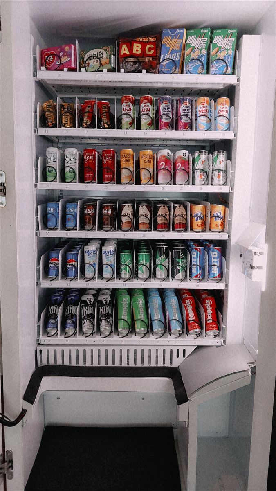

여수 무인자판기 설치 완료 — 산업단지 공장 교대 휴게실 60칸 음료·간식 자판기

자판기 설치 글은 보통 기계가 서 있는 바깥 모습만 보여 드립니다. 이번에는 문을 연 안쪽을 그대로 올렸습니다. 공장 교대 휴게실처럼 24시간 사람이 바뀌어 가며 쓰는 자리는 기계를 어디에 두느냐보다 60개 칸을 무엇으로 어떤 순서로 채우느냐가 운영을 가릅니다. 사진 속 선반마다 찍힌 00, 10, 20… 번호가 그 지도입니다.
어떻게 구성했나
칸은 6단, 한 단에 10칸씩 모두 60칸입니다. 맨 윗단만 과자·초콜릿이고 나머지 다섯 단은 전부 캔·병 음료입니다. 위아래를 이렇게 나눈 이유는 단순합니다. 과자 상자는 가볍고 부피가 커서 위쪽 얕은 칸에 세워야 넘어지지 않고, 캔은 무거워서 아래로 내려야 기계 전체가 안정적입니다. 무게가 위로 쏠리면 재고를 채우려고 문을 열 때 기계가 앞으로 흔들립니다.
음료 다섯 단도 성격별로 묶었습니다. 사진에서 가운데 두 단은 커피·식혜·차 계열이고, 맨 아래 단은 에너지드링크와 이온음료입니다. 야간조가 가장 먼저 손대는 쪽을 허리 아래 꺼내기 편한 높이에 두는 배치입니다. 또 하나 눈에 띄는 점은 같은 품목이 나란히 두 칸씩 들어가 있다는 것입니다. 잘 나가는 품목을 한 칸에만 넣으면 교대 한 번에 바닥이 나고, 다음 조는 빈 칸만 보게 됩니다. 두 칸을 붙여 쓰면 재고가 두 배로 버팁니다.
앱으로 원격 관리, 설치는 반나절
칸을 아무리 잘 짜도 언제 비는지 모르면 소용이 없습니다. 공장은 관리자가 야간에 상주하지 않는 경우가 많아, 아침에 와 보니 인기 품목만 텅 비어 있는 일이 흔합니다. 이 자판기는 사진의 칸 번호 그대로 남은 수량이 휴대폰 앱에 숫자로 뜹니다. 28번 칸이 0개라는 것이 사무실에서 보이니, 창고에서 그 품목만 들고 한 번에 채우러 가면 됩니다. 매출도 칸별로 쌓여서, 두 달쯤 지나면 안 나가는 칸을 다른 품목으로 바꿀 근거가 생깁니다.
결제는 카드와 간편결제만 받습니다. 작업복 차림으로 현금을 들고 다니는 사람이 거의 없고, 현금을 받으면 잔돈 보충과 수금 때문에 누군가 주기적으로 기계를 열어야 합니다. 설치에 필요한 건 220V 콘센트 하나와 기계 폭만큼의 벽면, 그리고 사진처럼 문을 활짝 열 수 있는 앞쪽 공간입니다. 이 앞 공간을 못 빼면 재고 채우기가 매번 고역이 되니 자리를 잡을 때 꼭 같이 봅니다. 배송·수평 조정·상품 적재·시험 결제까지 반나절이면 끝납니다.
구매·임대·렌탈 모두 가능
공장처럼 자리가 바뀌지 않고 이용 인원이 일정한 곳은 구매가 총비용으로 유리한 편입니다. 반대로 기숙사나 현장 사무소처럼 한시적으로 운영되는 공간이라면 임대나 렌탈로 시작하는 쪽이 부담이 적습니다. 어느 쪽이든 설치비는 무료이고 세금계산서도 발행됩니다. 휴게실 사진과 벽면 가로·세로·높이 치수, 그리고 교대 인원과 조 편성을 알려 주시면 몇 칸짜리 기계가 맞는지, 60칸을 어떻게 나눌지 먼저 잡아 보내 드립니다.
여수 무인자판기 상담은 무료
국가산업단지를 낀 삼일동·묘도동·월호동, 여천 쪽 생활권인 여천동·쌍봉동·주삼동·시전동, 구도심 중앙동·충무동·대교동·동문동·한려동과 광림동·둔덕동·만덕동·문수동·미평동·서강동·여서동, 돌산대교 건너 돌산읍, 순천·광양과 맞닿은 율촌면·소라면, 바다 쪽 화양면·화정면·남면·삼산면까지 여수 전역에 방문합니다. 여수는 교대 근무가 도는 산업단지와 관광객이 몰리는 해안가가 한 도시에 같이 있어서, 같은 기계라도 자리에 따라 들어갈 품목과 잘 팔리는 시간대가 전혀 다릅니다. 공장 휴게실뿐 아니라 기숙사 로비, 사무실 건물 1층, 숙박업소 로비, 체육시설, 무인 스터디카페처럼 사람은 머무는데 파는 사람이 없는 자리면 한 대로 시작할 수 있습니다. 현장을 보고 자리와 품목까지 같이 잡아 드리며, 상담과 견적은 무료입니다.
관련 검색어: 여수무인자판기 · 여수무인자판기설치 · 여수자판기임대 · 여수음료자판기 · 삼일동무인자판기
※ 사진은 H포스가 시공한 설치 사례이며, 글에 적힌 지역의 현장 사진은 아닙니다.
📞 여수 무인자판기 설치 상담 010-6832-1994